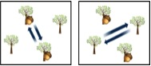
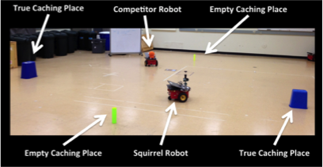

Bio-inspired Robot Deception
Squirrel-like deceptive behaviors for a robot

The patrolling strategy used by Eastern Grey Squirrels is one interesting example in nature regarding the possible role of deception, where they use deception to protect their food caches from other predators. After hoarding food items, squirrels begin to protect their resources from pilfering by patrolling the caches. As the patrolling strategy, squirrels first move around the caching areas and check whether the cached food items are safe. It was observed, however, that when a predator is present, the squirrel changes its patrolling behavior to spend time visiting empty cache sites, with the apparent intent to mislead the raider into the belief that those sources are where the valuables are located, a diversionary tactic of sorts.
Inspired by these deceptive behaviors of squirrels, a bio-inspired behavior-based model of squirrel caching and protecting behaviors for application to robotic systems is developed and implemented in MissionLab, a mission specification software package developed by the Mobile Robotics laboratory at Georgia Tech. MissionLab pro- vides a graphical user interface that enables users to easily specify behavioral states and the control transitions between states, yielding a finite state acceptor (FSA), which can then be compiled down to executable code for both simulations and robots [94]. Each behavior component is an assemblage, a coordinated aggregation of primitive behaviors. The new caching and patrolling behaviors created are combined with pre-existing behaviors, such as avoiding obstacles, moving toward an object, or injecting randomness (noise). Simulation studies and real robot experiments were also performed to validate the algorithm.
This is a form of misdirection, where communication is done implicitly through a behavioral change by the deceiver. I implemented this strategy in simulation, and showed that these deceptive behaviors worked effectively, enabling robots to perform better using deception than without with respect to delaying the time of the discovery of the cache. I also performed the real robot experiment evaluated using the experimental layout using two Pioneer robots and external camera sensors.
This research has been covered by Discovery, IEEE Spectrum, Wired UK, Tech Hive, Engadget, Science World Report, Huffington Post UK, Popular Science, and a number of other media outlets.
Publications
- Jaeeun Shim and Ronald C. Arkin. "Biologically-Inspired Deceptive Behaviors for a Robot," 12th International Conference on Adaptive Behaviour, 2012, pp. 401-411. [pdf]